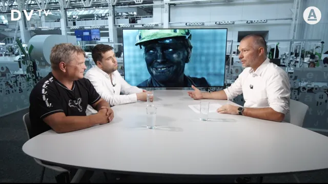
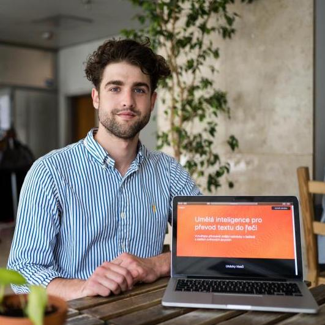
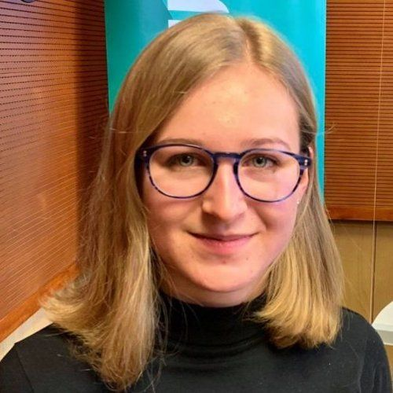
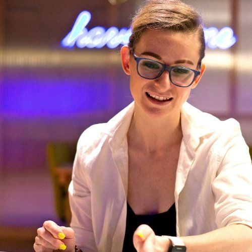
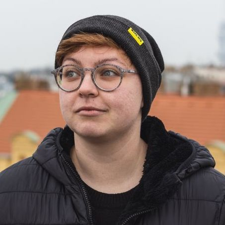

Příběhy#
Inspirativní příbehy lidí jako ty, kteří se bez předchozí znalosti naučili programovat, programování jim v něčem pomohlo, nebo si v IT dokonce našli i práci.
Inspiruj se#
Jako inspirace a motivace jsou příběhy fajn. A je důležité, abychom je měli. Když malá holka uvidí úspěšné vědkyně a programátorky, nenechá si namluvit, že holky do IT nepatří. Když si Rom všimne, že jinému se povedlo programování vystudovat, nebude mu už hlas v hlavě říkat: „Ty na to nemáš, žádný jiný Rom to nedokázal“. To samé horník, když ve filmu uvidí Tomáše Hisema.
Studie zjistila, že ihned po zhlédnutí inspirativních dokumentů – a pozoruhodně i o pět let později – byly aspirace a optimismus o lepší budoucnosti mnohem vyšší než v kontrolní skupině.
Nesrovnávej se#
Snadno se však stane, že se s příběhy začneš srovnávat. Nedělej to, pro tvou psychiku je to strašně nezdravé. Srovnávej se pouze se sebou a svými předešlými výkony.
Úkolem příběhů není ukázat, že všichni to budou mít takto snadné, ale zafungovat jako vzor, že něco jde. Že pro určitou skupinu lidí není vyloučeno něco dokázat, a že existují různé cesty, jak k tomu dojít.
Většině příběhů ale chybí informace o tom, co proběhlo v zákulisí. Někdo se čtyřmi dětmi změní kariéru, jenže se už nikde nedočteš, že má prarodiče v bytě naproti a každý den jim hlídají. Každý má zcela jiné výchozí podmínky a i když jsou navenek zdánlivě podobné, většinou prostě stejné nejsou a fakt nemá smysl se srovnávat a bičovat se za to, že někdo něco dokázal a já (ještě) ne.
Poutavě odvyprávěné příběhy slavných lidí nebo třeba obětí zločinů a katastrof vynechávají řadu informací a záměrně nebo mimoděk manipulují s publikem, což sice vede k větší atraktivitě a přístupnosti, ale také to snižuje důvěryhodnost sdělení.
Aby příběhy inspirovaly a někdo se o ně zajímal, musí být výsledkem storytellingu, cherry pickingu a survivorship biasu. James Bond se taky nikdy nejde ve filmu vyčůrat. Pokud to není důležité pro příběh, je zbytečné to sdělovat. Že někdo probrečel večery s hlavou v dlaních možná důležité pro příběh je, ale zase by se to moc nevyjímalo v success story na stránkách kurzu. A možná to ten člověk ani nechce takto sdílet, je to osobní.
Je to tedy na tobě. Stejně jako při scrollování na instáči, kde mají všichni nejlepší dovolenou a nejlepší zadek. Inspirovat se kam zajet na dovolenou? Jasně! Ale uvědomovat si, že možná měli v kuchyni šváby, možná se pohádali, možná mají jiné geny, bohaté rodiče, a možná je to fotka z vhodně vybraného úhlu.
Pokud víš, že se s druhými srovnávat nemáš, ale stejně si neumíš pomoci, projdi si kapitolu Psychika na cestě do IT.
Návody na úspěch#
K tématu inspirativních příběhů se váže i téma „zaručených návodů na úspěch“. Často se vyzdvihují určité vypozorované podmínky, nebo rysy, které spojují úspěšné lidi. Každý už nejspíš slyšel o tom, jak jsou nejúspěšnějšími podnikateli ti, kteří ani nedostudovali. No a prý když to uděláme stejně, máme vyšší šanci dostat se tam, kam si přejeme.
Tak jednoduché to ale není. Znaky, které najdeme u úspěšných, můžeme stejně snadno najít i u neúspěšných. Tento přelud hezky popsal ve svém článku behaviorální ekonom Petr Houdek.
Ve skutečnosti nedostudovaní nejsou disproporčně častěji miliardáři, spíš jsou nezaměstnanými… Podobně rady nehádat se v manželství ignorují příklady párů, které se také nehádaly, ale přesto se rozešly nebo nebyly nikdy šťastné… Zkrátka, z úspěchů lze velmi snadno vybrat určitý rys, ale to neznamená, že je tento rys skutečně klíčový pro úspěch.
Příběhy z junior.guru#
Děláme rozhovory s členy zdejšího klubu. Cílem je nejen ilustrovat hodnotu klubu pro juniory, ale taky snaha popsat cestu do IT co nejautentičtějším způsobem.
Co pro ně bylo těžké a nedařilo se to? Kdy chtěli všeho vzdát a jen brečet v koutě? Jak to nakonec překonali? Co by poradili ostatním? Nejen že se nebojíme o nepříjemnostech psát, my se na ně přímo ptáme!


Lucie Cicvárková

Z horníka programátorem#
V roce 2020 vznikl o rekvalifikaci do IT český film Nová šichta. Dokument sleduje Tomáše, který se rozhodl stát se programátorem po tom, co strávil 25 let pod zemí jako horník na Ostravsku. Film realisticky popisuje nejen úspěchy, ale i těžkosti celé Tomášovy cesty. Jak přesně rekfalifikační program probíhal a kolik horníků se dostalo do IT zjišťovali v listopadu 2023 datoví novináři z ČRo.
Tady si můžeš film legálně pustit, nebo i stáhnout.

Tady si můžeš film legálně pustit, nebo i stáhnout.

Rozhovor v DVTV
Tomáš Hisem a režisér Jindřich Andrš u Martina Veselovského.
Příběhy odjinud#
Sbíráme je z různých koutů českého a slovenského internetu, stejně jako když v 19. století zapisovali Němcová s Erbenem lidovou slovesnost.
Víš o dalších? Tipy můžeš poslat na honza@junior.guru. Jedinou podmínkou je, že musí být publikovány na „neutrální půdě“. Každá vzdělávací agentura si dává na web success stories, které ukazují, jak jsou jejich kurzy úžasné a absolventi úspěšní. Záměrem tohoto seznamu je vytvářet nezávislou protiváhu a ukazovat, že:
- Programování se lze učit i jinde než v kurzu.
- Ne vždy je vše sluníčkové. Ne vždy to skončí tak, jak si člověk naplánuje. Ne vždy to zvládne sám a levou zadní.
- Cesta většiny lidí je spletitá. Zkouší různé způsoby studia, různé kurzy, různé materiály.
- Programování je obecná, užitečná dovednost, která se hodí i pokud se člověk neplánuje rekvalifikovat do IT.
Lucie Bažantová
Babu Červenková
Spletitou cestou k práci programátora: „Jedničkář jsem vážně nebyl“
František Német
Berta Jarošová, Veronika Kolek Netolická
Kristýna Sodomková
Jakub Ráček
Petr Novák

Studoval výtvarné umění, programoval jako samouk. Tvoří aplikaci pro syntézu hlasu
Šimon Bařák
První zkušenosti v oboru našla díky dobrovolnictví a open source
Martina Hytychová
Pavel Polcr
Z bioložky programátorkou, po práci dělá kurzy IT pro ženy
Tereza Vaňková

Gymnazistka dělá s umělou inteligencí a tvoří appku na finanční gramotnost
Maria Šimůnková

Lenka Segura

Začala jako asistentka, nyní vede tým expertek a expertů na bezpečnost informací
Irena Poncar
Barbora Kacerovská

Honza Kovanda

Pavlína Froňková
Pracoval v hostelu, spal v pokoji pro 20 lidí. Testuje software, který tam používal
Michael Diaz

Lingvistka, lektorka angličtiny, vedoucí obchodu s oděvy. Dnes datová analytička
Markéta Lourenco
Iveta Česalová
Iveta Česalová

Ze Sibiře přijela do Prahy studovat chemii, místo toho je programátorkou
Daria Doronina

Michal Havelka
Zdravotní sestra z Děčína dnes pracuje jako vývojářka
Veronika Gabrielová
Ivana Brabcová
Jako juniorka začala v globálním startupu, zaučení zvládla i na dálku
Ivana Hučková
Ondřej Korol
Radka Symonová
Marcel Horváth
Maria Šimůnková

Andreas Gajdošík
Tim Breeding
Michaela Šebestová

František Hába
Tomáš Hisem

Magda Zawora
David Žihala

Stanislav Kucharík
Marek Dlabáček